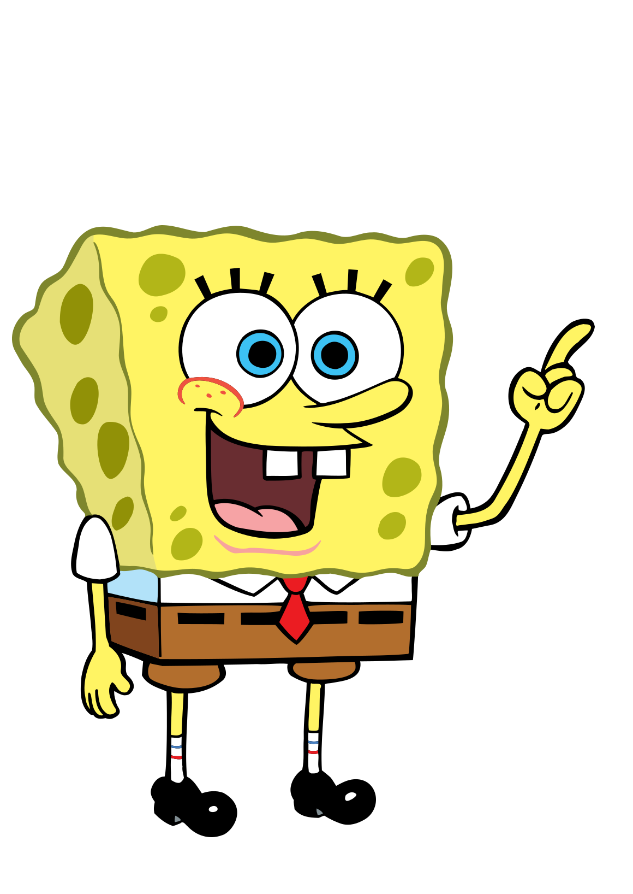
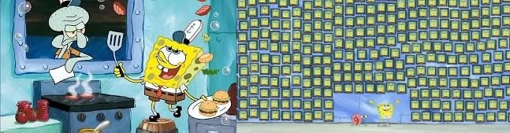
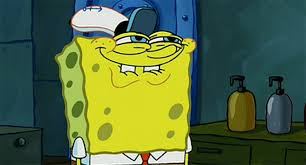

Губка Боб Квадратные Штаны
Автор Никита Волков
Губка Боб Квадратные Штаны (полное имя — Роберт Гарольд Квадратные Штаны) — главный герой американского одноимённого мультипликационного сериала, премьера которого состоялась 1 мая 1999 года на канале «Nickelodeon». Персонаж был придуман морским биологом и аниматором Стивеном Хилленбергом и озвучен актёром Томасом Кенни (в русской версии персонаж озвучен Сергеем Балабановым). В России также известен как Спанч Боб Сквэр Пэнтс (фонетическая транскрипция). Судя по сведениям из его паспорта, он родился 14 июля 1986 года, значит на момент начала трансляции мультсериала Губке Бобу было около 13 лет, но, также возможно, что действия мультсериала разворачивались в другом году и ему могло быть либо больше 13-ти, либо меньше
Губка Боб — повар в ресторане «Красти Крабс», в котором ему присуждалось звание работника месяца 364 раза. Его работодатель — мистер Крабс, слишком любящий свои деньги, хотя иногда платит ему в меньшей степени.
Губка Боб — морская губка, хоть и выглядит, как кухонная. Характерные черты его внешности: большие голубые глаза, много дырочек по всему телу(около 20 дырок) и рот с выступающими вперед резцами, ямочками на щеках и веснушками. Он может по желанию изменять форму своего тела, а также длину и форму рук, втягивать их в себя. Обычно носит белую рубашку с коротким рукавом, красный галстук и коричневые квадратные штаны, отсюда и его фамилия «Квадратные Штаны» (хотя на самом деле штаны не квадратные, а прямоугольные). Его штаны подпоясаны чёрным ремнём. На ногах — чёрные ботинки, белые носки с синими и красными полосочками. Говорит высоким и тонким голосом. Очень любит петь вместе с Патриком.
Губка Боб учится в Лодочной Школе Миссис Пафф, аналог школы вождения, но никак не может получить права. Губка Боб живёт со своим питомцем — улиткой Гэри в большом «доме-ананасе» по адресу 124 Конч Стрит в вымышленном городке Бикини Боттом[2], расположенном под водой около реального тропического острова в Атолле Бикини[3]. Его соседи: осьминог Сквидвард — коллега Губки Боба в «Красти Крабе» — кассир[4], который живёт в доме, похожем на статую с острова Пасхи, и морская звезда Патрик — лучший друг Губки Боба[5], с которыми его объединяют общие интересы. Сквидвард постоянно жалуется на то, что Губка Боб не даёт ему спокойно жить(включая его смех который может раздражить умных, например Планктона).
Губку Боба отличают оптимизм, доброта, трудолюбие, надёжность и чрезмерная наивность. Его любимые занятия включают ловлю медуз (аналогично наблюдению за птицами и ловле бабочек) и надувание пузырей вместе с Патриком[2]. Он не догадывается, как раздражает Сквидварда[4]. Очень часто Губка Боб бывает слишком энергичным, даже в таких делах, о которых он ничего не знает (например, когда Сквидвард предложил ему устроить забастовку в «Красти Крабс», Спанч Боб принял предложение, не зная, что это такое). В фильме «Sponge Bob SquarePants: The Movie», а также в мультсериале (серия «Оркестр недоумков») Боб показан хорошим вокалистом и гитаристом, умеет играть на укулеле.
Обо мне
Никита Волков
Автор этого сайта